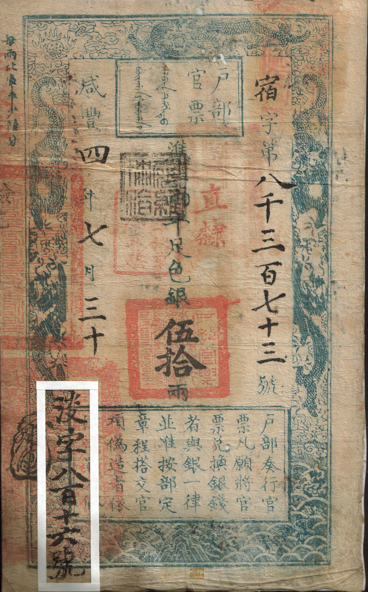

第 1 章
岁首的账册
正月初一这天，天还没亮，西城兵马司的一个小吏敲开了户部的侧门。他怀里抱着一个包袱，说是昨夜巡夜时在皇城根捡到的，里头裹着一本册子，封皮上的墨迹已经洇得辨认不清。这一带衙门多，他不敢乱送，想着天亮先到户部来问一声。
李振声正在值房整理旧年案卷，听见说话声走出来。他接过那本薄册子翻了翻。册子记的是崇祯十五年秋各省起运京师的银子：某府若干、某县若干、起脚日期、解官姓名、批回编号，共七页，纸色发黄发脆，边角卷起。第六页上有一行小字批注：“此批行至河间府属境，遭剥船倾覆，银鞘沉水，捞获无多。”第七页整页空白，只有顶部潦草写了三个字——“查无解”。

他把册子合上，还给来人：“是旧册了。”老吏替他补了登记簿，打发来人回去。
李振声在值房坐回桌边。一年里最清静的日子，竟被一个找不到失主的包袱打断，像某种征兆。这一天是崇祯十七年正月初一，百官照例在午门外行朝贺礼。《明史·本纪》记了一句：“庚寅朔，大风霾”，又记“凤阳地震”。正月里风霾不算稀奇，凤阳地震也不见得刻吉凶，只是放在这一年头上读起来有些刺眼。
李振声没有去午门。他不是六部主官或科道言官，朝贺轮不到他站班；何况年关前后积压的卷宗总要有人消掉。户部旧年案卷不像别处——银子有定数、款项有定程，入了库才叫完事。崇祯十六年腊月底合库时，差了八万多两白银对不上数。管内库的人报说盛贵妃助饷和田皇亲家借支尚未归还，仍旧挂着。这样的填法大家都懂：挂账就是承认这笔银子不会来了，只是不在自己任上先抹平。
案头上最厚的是一本《崇祯十六年十二月钱粮奏销册》。按例，各省布政司每年要把下年起运进京的钱粮预先造册报部，谓之“奏销”。地方实收多少、起运多少、留存多少、截留多少、拖欠多少，由州县层层上报，布政司汇总造册，解到户部审核数目无误后才能销算。这册子封面已经磨白起毛，纸角被翻阅得卷了边。李振声已经核过三遍，第四遍从头翻起。首项写着“浙江布政司起运银三十七万八千五百两”，批语“陆续解纳”。陆续——这是个好词。它意味着上面的数字不需要在哪个期限内走完整个行程，也无须同一时间到齐在北京城内。
第二项是“江西布政司起运银二十四万三千七百八十两”，注“奉文暂留四万两防剿”。第三项是“应天府起运银八万一千四百五十两”，注“因地方拖欠未完”。就这样一项项记下去：起运的数不少，“已解”“解讫”的寥寥，“未完”“暂留”占了大半。
旁边另一本小册是《太仓银库月报》。腊月终报写着实存库银四万三千一百两。李振声心里算过一笔总账：京营十二万官兵下一期的月饷约摸十四万五千余两，九门城守和各处犒赏杂支二百余项更没数。四万三千一百两，离任何一项像样的开支都差得太远。从秋后入冬至今，这数目他算过许多次了，结果越来越坏。如今纸面上还有十二万在说话，能用的只有四万三。接下来的开销每样都是一动就响的空弦。支出和库存配不上套，日子静静躺着，像晒干河床里两头断开的麻绳，挽不起接头来。李振声搁下笔，没有立刻再算一遍。这种年头，数字越算越薄。
他翻开一大叠河北各卫所的军饷请领单，核对名册时才发现，各卫名册明显攒着浮额虚冒。保定右卫册载官军四千一百八十余名——实际司印经历多年战乱，编制早非旧制，随时补得出来，却能人人在名册上领一份小米折钞，被大小书办朋分着过日子。做进纸上的名目与真实情形天差地远，他也早已习以为常。官场十多年来如此，新班子有心清厘，却挑不出时辰来弄。到头来真支与浮支乱在一盘账里，勉强拼着，名为旧例。上上下下心照不宣，让别人看去也都还像个朝廷的样子。
直到正旦风霾过后，午后一封接着一封驿报从午门值房转来。第一本是陕西巡抚告急片，称流贼大部离西安已过四十里，贼马一日一夜可行百里，方向直指山西边界。第二本是宣大总督王继谟陈情：大同镇欠饷数月，兵心汹汹，不知还能撑到几时。第三本是兵部职方司据塘报摘要：李自成已于正月建国号大顺，改元永昌，设官分职，置丞相、六政府，便殿封赏群僚。春正改朔，这是做皇帝的姿态。
即便整个南京依旧自居天下正宗，而那自称新朝降世的一切行止，无不依照开国之君的礼制郑重造册。原来旁边早就不止一家朝廷——各自在自己的元日里同时做岁首那一套仪式。整本的库簿照常流转着，两不相碍，却又彼此迫近。其实就差彼此打个照面而已。
此刻户部尚书厅上，尚书倪元璐正坐着翻阅一本《崇祯十六年全年钱粮总册》。大半刻钟过去，咳嗽声不断。帘外送来陕西巡抚密揭——这阵急递不知何时越过了职方司，直到天黑前却有专人送来尚书府邸，越过了全部寻常流程。
可见此事非凡。倪元璐看毕，坐在椅上沉思一刻，唤家人研墨，提起笔来。题为《请停远派催饷差官疏》，却写了一行便放下。
这家国纷纭绕到他案头也是多年习惯。眼前大势早已看得分明：京城空虚，各省已残败不堪，南北梗塞，运河漕运几近断绝。再向远方要立刻能调度进京的财力已徒劳——无非催出几纸空白批文而已。
于是决意只消奏请皇上将各处所欠钱粮一律暂缓追比，但从京城近畿八府着手搜括现有积年廪余。也不顾虚名了，先救眼前火为急。连催讨格局都陡然收回巴掌大区域内——透着穷途窘态。草成稿子封好，吩咐明早送宫里去。
这夜无眠的不止尚书一位。管太仓库的大使姓刘，同知州衔，当年也算武官出身。如今只管几十间空荡荡的银窖和一批旧秤老砝码。
他亲自下窖盘点一番，用手托着一封写明“太仓现贮纹银四万三千一百两整”的朱批印结，反复按手印签押。抬头发觉窖角靠墙边还扔着一串旧封条——拾起看时，原来写着某年月日某侍郎封锁字样，下面又有某年月日刘大使某同知拆封的字样。纸已霉烂不堪。
真正让他发怵的是手里这封印结——凭着它明日便可向兵部发放边镇月饷。一次印给四十余万两也有过荒唐岁月——那时库里有银子就要编出一套严密制度来对应。如今千头万绪都唯一挥手开一小口：剩下的便是有限的钱和无限的虚数在满朝维持形势的权宜之计。
宛如有人架在火上的干柴已经烤脆了，你还要再抬手掰一下——随时都会咔地断开。日子一天天挨着。
山海关那边军情文书来得更紧。从前线回来的人都说关宁兵又缺饷三个月，已有营哨鼓噪逃走的，沿路劫掠成了祸患。守关总兵官只能一面拿库存陈粮暂抵，一面连连请中枢速拨折色银子。兵部却连牛皮都吹不圆——他们自己知道能挤出来的银子早就八竿子才一秤。饷没有令人信服的着落。山海关距北京只有几百里地，平日最多六七日快马可达。可如今这中间隔着的不是路程——而是层层账册全数的空格、几千里无解的周转题。任凭一道檄文催多少次也填不满中间这段断开的期限。
快到晚上时分，户部的值房里依然亮着几盏油灯。那个包袱里的旧册最终没有再取出来——更没谁真去查失主。因为所有人手里各有一本翻过来倒过去都对不清的账：今日的都尚且理不出个头绪，何况数年前的旧引散佚半路、失风溺水的注定无处再寻。起运的那批银子浸在水底顺流而下——永远赶不到该到的账户上了。它也永远不被注销下去——始终挂在本该有它的空白地方。
黄昏时分消息传得飞快。李自成改元大顺的塘报已经抄成几份在六部传阅。李振声拿起一份看了看日期——正月初一发出的告示。他忽然意识到一个细节：李自成选在正月初一改元登极建立新朝——同一天北京在举行朝贺大典——同一天他在值房核账——同一天倪元璐在写《请停远派催饷差官疏》。两个朝廷在同一天各自完成了自己的岁首仪式。李振声放下塘报又拿起账册来翻了一遍——第四遍从头翻起时他忽然觉得自己不是在核账而是在考古：每一笔数字都是旧朝留下来的遗物，等着被某种新的现实重新估量价值——只是如今还没有人愿意承认这件事而已。
夜深了，值房里只剩他一个人。油灯里的油快尽了，火苗开始跳动，作响。他合上账册，站起身，走到窗前推开窗缝往外看。风霾已经停了，天上露出几点寒星——正月初一的夜空和往年没什么两样。但整个帝国已经在这一天里同时完成了一次庄严的朝贺、一次仓促的改元、一次徒劳的催饷筹划、一次无言的库窖盘点。而这四件事之间，没有任何一件知道其他三件正在发生。
这就是账期脱钩的第一天：账目上的数字与实际可调动的资源之间，时间差和兑换失败使每一笔账在到期时都无法兑现为行动。而这一天，北京城还照常过着年节，仿佛一切如旧。
黎明前最暗的时候，李振声最终拿起笔来，在一纸移会兵部的文稿上填好了本月京营月饷准借支太仓存银若干、谨按旧例核算的数字。那笔银子决计不够以一月之饷落到十二万官兵头上，大约每人只摊得三钱五钱罢了。但他还是照样写了“足额关支”四字。
搁笔时，远处传来更鼓声，沉沉敲过一声，像无数个从前的年节一样平静，没有多，也没有少。明天开印以前还有一整天假日，整个北京城酣睡在它最后一个不会醒来的早春夜里。
而第一道写满数字的命令已从书桌上折好，封进信封。油灯火苗微微跳了一下，噼啪响了一声，照着封面上尚未干透的墨迹，仿佛一切照旧，周而复始，岁月静好。无人想要追问这笔不足额的银子将要在名册上引出什么样的下文——又如何弓弦正贪夜无声地绷满，等待着响箭离弦那一刻到来时，亏欠的全部都要一并结清，仿佛那才是这部庞大机器的本来前程。
在新的一年第一个破晓尚未到来之际，只能如此静静地存在。在纸面上稳固从容，一动不动，望着满天风霾停驻在东方的屋脊之上，毫无犹疑地等着天亮前那最后一刻钟过去，好生拖着这一整部无可挽回的重负，继续迈向下一个字墨犹湿的下一个日子。
像一只船沉在水底，却仍照常升旗放炮，打起满帆向西航行；满船的人也都安然睡着，无人知晓脚下早已无底板。
醒来看见的第一个字，便是水痕从船板缝隙密密渗进来，如同一笔迟到的、写坏的旧账，蘸满了水珠，洇透了纸背，令整页开列的年号顿时模糊不堪。几秒钟之后，所有的水面便会溢出船舷，世界朝着唯一的方向哗啦倾倒下去。
而在那到来之前，一切如故。地平线上苍茫无物，只听得见风声从很远的地方传来，送来凌乱断续的一两声号角，既无悲伤也没有欢喜，只是个简约的事实陈述：宣示还有路要走，而路已经走到了尽头。
某一个时辰尚未来临，所有时辰却都已经只剩午夜将至前那一片幽暗深邃、不见底的冬夜。尽头那盏灯终于吹熄了，留下一缕青烟缭绕烛台，慢慢散尽于无边的黑暗之中。只有纸张安卧不动，等待天明，如同等待一场永远不会到来的开销期限——本身最终无法兑现为任何一场危机。
他一直坐在原处，直到窗外天色渐渐泛白。雪光映着桌面上那封封好的文书，他看到昨夜填下的数字隐隐泛起一层灰色。
那笔兵血早在签发之前已经根本不剩分厘，只剩下个名字。任凭他用这个空名去回荡着底下滋生出来的一切蠢动的向死之物——恰好够推着这架空空作响的朝廷多挪动一步，迈过新年的门槛，走进第一个注定不会有任何奇迹降临的白昼，继续展开剩余九十九天的漫长清单。接下去第一件事，便是照例点验京营官兵花名——实际人数可能比陛见的大臣们听说过的还要少许多。
真正的问题从来不在账目的哪一页漏掉了哪一笔，而是在这广大疆土之上，最后一个能兑现真金白银的地方如今还剩在哪里；要支应下一个缺口的银两，又要向下一个目之所及的谁去讨要——仿佛同昨日一样无解，明日复明日，循环往复。这就到了该数人头的时候了。
等清点完毕，恐怕那本花名册上的空额又要比任何人估量的都更触目惊心些。而这一切铺垫，都将于开印后第一道例行公事的行政命令里不动声色地掀开它自身的内里，露出这个王朝账本的核心秘密——正如潮水退去，滩涂上陆续显露出一具具半埋的骸骨那样，整整齐齐排列成行，保持着生前的编制，沉默等待检阅，如同土地等待一场并不存在的雨水浇灌，朝廷等待一个从不曾存在的终点。它就在下一个日出的地方安静立着，几步之遥，尚未走近，已被冬日的凛冽晨光映照得轮廓分明——如一根朽木覆满白雪，远看仍似完好的梁柱，只要轻轻一碰，便化作齑粉，连叹息也无声无息。
就此落下帷幕一般，悄无声息地过完了生命中最后一个完整的岁首元旦。新的时序已然开启，而他仍坐在原处，面前铺展着一片漫漫长路、尽头就是终点的白纸。墨迹逐渐干透，字字决绝，再也不容改动。